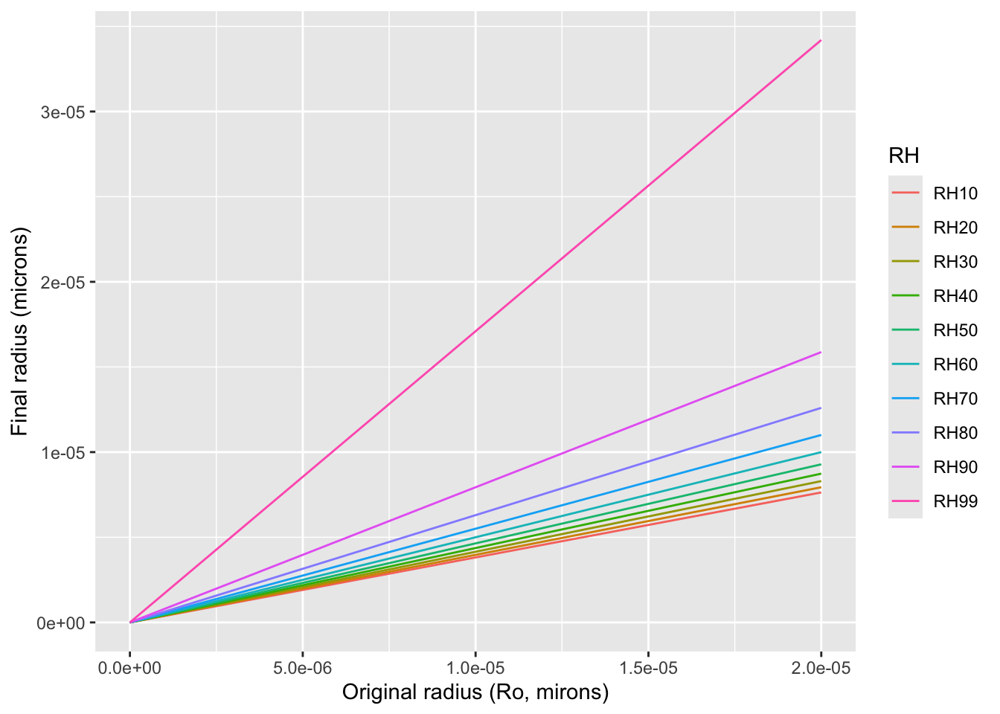

Mini Project 5: Snot Rocket Science
Introduction
In this last Mini-project, we’ll explore the role of size in fluid dynamics, especially how small things behave much differently than their large counter parts. This difference in behavior between the relatively small and large is critically important to so many aspects of biology (e.g., locomotion, material transport, etc.), but perhaps no issue related to size is more important in these times than the size of respiratory droplets and how this affects the risk of infection from SARS-CoV-2, the virus that causes CoVid.
We humans and other tetrapods spew respiratory droplets as we talk, sing, cough, and sneeze. Because respiratory droplets come from a wet pharynx, they are of course mostly water. Thus, they tend to desiccate once outside the damp pharynx and therefore change in size once they leave your body. How much they desiccate depends on a number of factors and the most important of these is the humidity of the environment into which they are ejected.
The goals of this project are to:
- Predict how relative humidity of the external environment effects the size of repsiratory droplets.
- Predict how long droplet containing SARS-CoV-2 remain airborne under different conditions of relative humidity.
Conceptual basis
Human respiratory droplets are mostly water (∼90 to 99%), with a little bit of inorganic ions, sugars, proteins, lipids, DNA, and, in our case pathogens thrown in. This means that any droplet that is not purely water can only shrink due to evaporation to a minimum size. This minimum size (the radius, \(R_f\)), can be estimated if we know the relative composition of the non-water content. While the exact composition depends on many factors, the typical proportion of non-water content (\(\phi_o\)) in a droplet is around 5%. We can follow Netz (2020) and assume this process happens very quickly (<5 s) to predict the final size (\(R_f\)) of a completely dried-out droplet devoid of water with the following:
\[R_f=R_o(\frac{\phi_o}{1-RH})^{1/3},\] where \(R_o\) is the original droplet size and \(RH\) is the relative humidity.
A relative humidity value of \(RH\) = 0.5 is typical for a living or bedroom, but it can vary a lot within enclosed environments and exterior spaces, too. Kitchens, gyms, and bathrooms tend to be wetter places and the weather only needs to change a little bit to change the \(RH\) outside. The following figure demonstrates the effect of varying \(RH\) on final droplet size.

The original size of a respiratory droplet (\(R_o\)) expelled during exhalation varies considerably and the consequences of this stimulated a lot of speculation as to the modes of transmission for SARS-CoV-2 in the early days of the pandemic. Whether small or large, we know that transmission is most likely to occur when someone is close to the infectious person, generally within about 6 feet. However, airborne transmission remains possible through exposure to the virus-containing respiratory effluent comprised of smaller droplets and particles that can remain suspended in the air over long distances (usually greater than 6 feet) and time (typically hours).

The reason smaller droplets remain airborne for longer periods of time relates to in an important principle in small particle fluid dynamics: Stokes Law. This principle states that the frictional force (the viscous drag force) that is exerted on spherical objects with very small Reynolds numbers in a viscous fluid is quite large compared to the gravitation force.
Stokes Law can be expressed this way. The viscous drag force on a sphere of radius \(R\) moving with a velocity \(V\) in a fluid of viscosity \(\mu\) is given by:
\[F=6\pi \mu Rv\] 
Consider a spherical particle of radius \(R\) and density \(\rho_p\) moving with a velocity \(v\) in a fluid of density \(\rho_f\) and viscosity \(\mu\). The forces acting on the sphere are the viscous drag force (from Stokes, \(F_d=6\pi \mu Rv\)), gravitational force (\(F_g=\frac{4}{3}\pi R^3\rho{_s} g\)) and buoyant force (\(F_b=\frac{4}{3}\pi R^3\rho{_f} g\)). The sphere accelerates until the drag force adjusts itself to make net force on the sphere zero. After this, the sphere moves with a constant velocity called the terminal or settling velocity. That is:
\[F_d+F_b=F_g.\] When we solve for \(v\), we get the terminal velocity, \(v_t\)
\[v_t={\frac {2}{9}}{\frac {\left(\rho _{p}-\rho _{f}\right)}{\mu }}g\,R^{2}\] It’s worth noting that since the excess force (\(F_g\)) increases at \(R^3\) and Stokes’ drag (\(F_d\)) increases as \(R\), the terminal velocity increases as \(R^2\) and therefore \(v_t\) varies enormously with particle or droplet size.
Methods
Begin your modeling project by finding a range of respiratory particle size from the literature. You may choose to focus on particle size as it varies with different behaviors (coughing, singing, sneezing, talking, etc.). Or, you may choose to focus on the size variability of droplets that result from any one of these behaviors. Pick at least 5 sizes to study. This will establish \(R_o\). Be sure to cite where you got these values!
While \(R_o\) represents the size of particles that may come out of the body, consider the effect of \(RH\) on altering size. To predict final size that will be subject to Stokes Law, you will have to implement the equation for \(R_f\) above in your model. For this part of your model, find the typical \(RH\) of various environments or conditions. For example, consider variation in \(RH\) between rooms in a home, different types of buildings, outside according season, between geographic locality, etc. Whatever your underlying factors, choose no fewer than four \(RH\) values to use in your model. As with \(R_o\), be sure to cite where you got these \(RH\) values!
Lastly, find the terminal velocity and suspension time for each of your five particle size classes and \(RH\) values using the Stokes-derived formula for \(v_t\) above.
For your model, assume the following:
- The density of your particles is the same as water.
- Air in your chosen environments is stagnant.
- \(v_t\) is reached instantly after the particles are expelled.
- Particles are exhaled or otherwise ejected from the pharynx of a typically tall human being (say 1.75 m).
- The droplets expelled reach their final size (\(RH\)) immediately after they are ejected.
- All other parameters (\(\rho_f\),\(g\),\(\mu\), etc.) take their typical values under the conditions you’re studying.
What to address in the report
- How does your chosen range of \(RH\) effect the final size of the particles?
- Under the assumptions of the model and different \(RH\) conditions, how long will particles of your chosen sizes stay suspended?
- What do your model predictions say about the relationship between initial size, \(RH\), and relative risk associated with the behaviors and environmental conditions you’ve studied?
- Include at least three informative figures that represent your model output and seek to answer these questions.
As a group, please synthesize the results of your model predictions and address these questions in a report in markdown format that follows the structure outlined on our Min-projects page. Reports and any data files reference by them are due Wednesday, April 26th, by 11:59 PM. They should be sent to Prof. Kenaley in a zipped directory over email.
What to pay attention to in writing the report
- Data are plural.
- Don’t use
print(),head(), etc. commands needlessly . . . we don’t need a large data table of ray data in our reports. - Better methods for printing tables (eg.
pander(),kable+kableExtra, etc.). - Figures and tables need captions! For figures, use
fig.capparameter in r chunk options. For tables use thecaptionparameter inkable()or similar. - Figures should be appropriately sized (check out
fig.widthandfig.heightin r chunk options). - Figure axes should be labeled appropriately.
- DON’T SET THE WORKING DIRECTORY
- A brief but informative introduction should set the stage by telling the reader what specific questions you are addressing (these will be unique to each group).